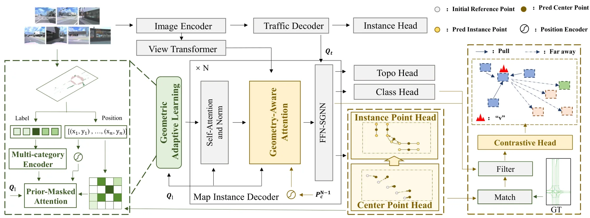
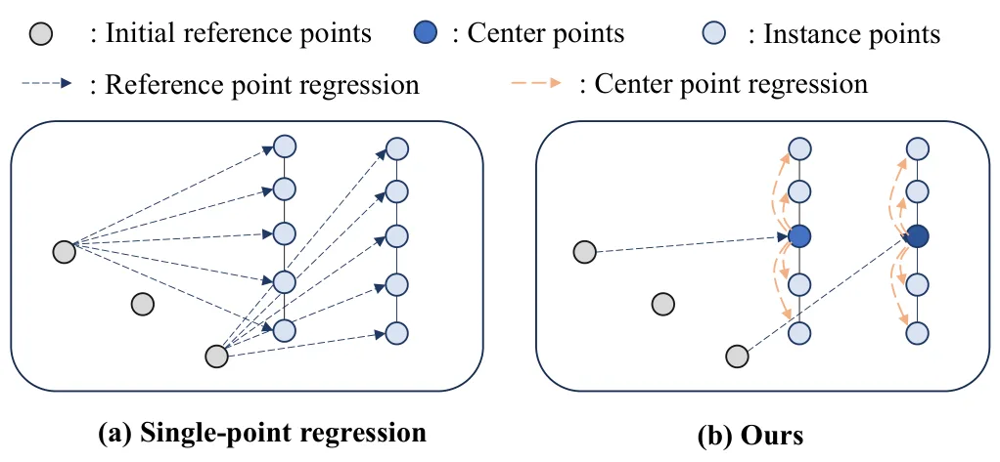
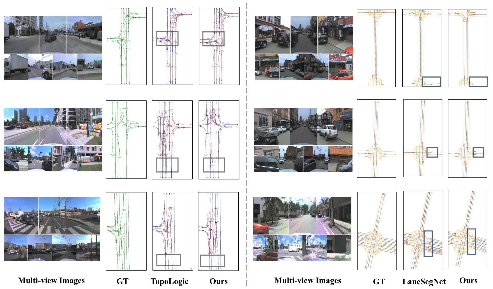
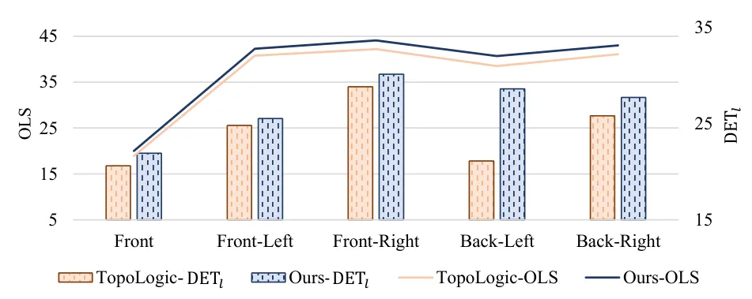
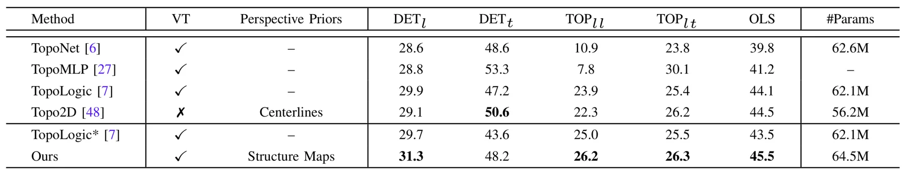
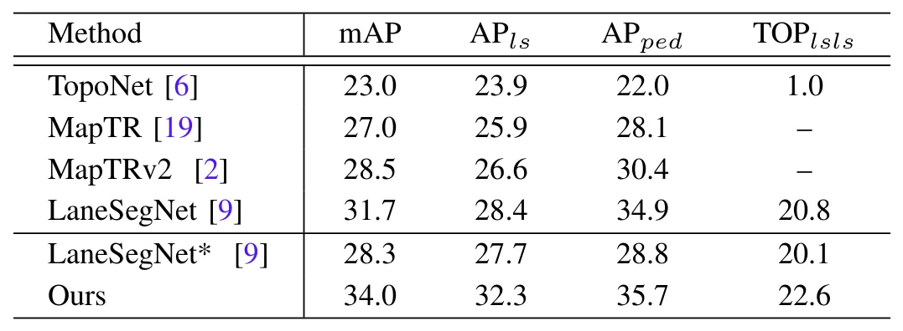
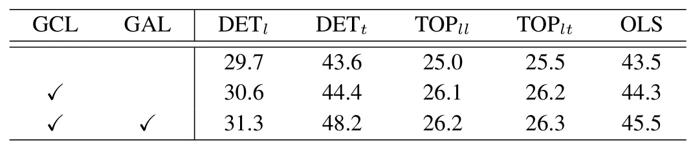
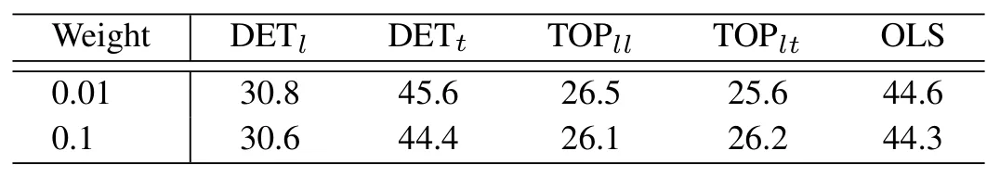
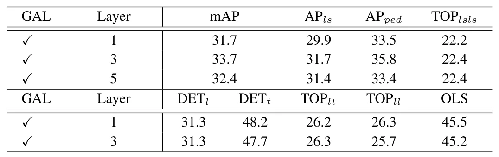
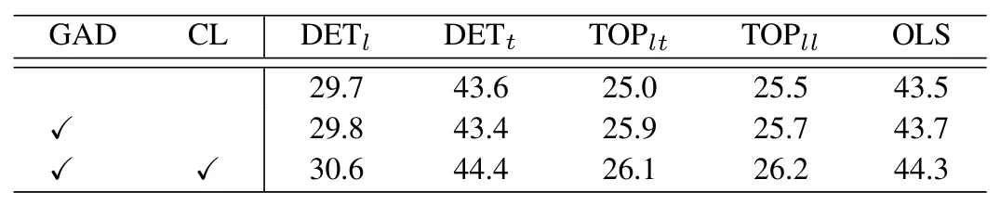

HGeo-TopoMap：以分层几何先验增强道路拓扑建图HGeo-TopoMap: Boosting Topological Mapping with Hierarchical Geometric Priors
直接涉及 mapping、拓扑与几何一致性，但属于道路地图感知而非轨迹估计或度量 SLAM，摘要也未给出绝对指标。
一句话工作总结
融合 IPM 道路先验、掩码注意力和中心线方向一致性，增强自动驾驶矢量化拓扑地图感知。
摘要
HGeo-TopoMap 面向自动驾驶中的道路拓扑地图感知，利用显式 prior map 与隐式空间关系改进缺少清晰标线的中心线检测。Geometric adaptive learning module 对 inverse perspective mapping 得到的道路结构图离散编码语义与空间特征，并以 prior-mask attention 聚焦有效区域；geometric consistency learning module 则在 geometry-aware decoder 上利用中心线的几何属性和空间关系，对相同方向实例的特征施加一致性。方法在 OpenLane-V2 的 centerline、lane segment 与 robustness benchmark 上均超过基线，代码和权重计划公开。
Topological maps are key outputs of autonomous driving perception systems, delivering essential road information for path planning. They identify instances such as centerlines and traffic signs, along with their connectivity relationships. Due to the lack of explicit markings for centerlines in real-world environments, the detection of centerline instances remains a significant challenge. To tackle this problem, we propose HGeo-TopoMap, which leverages an explicit prior map and implicit spatial relations to hierarchically boost topological mapping. First, a geometric adaptive learning module is designed for the road structure map obtained via inverse perspective mapping. This module discretely encodes semantic and spatial features from the map, followed by a prior-mask attention mechanism that selectively focuses on informative regions. Then, a geometric consistency learning module is devised, which leverages the geometric properties and spatial relationships of centerlines. Built on the geometry-aware decoder, it enforces spatial consistency by aligning features of centerline instances with identical geometric orientations. The proposed method is evaluated on the OpenLane-V2 dataset across the centerline, lane segment, and robustness benchmarks. Beyond substantial improvements in topological mapping accuracy, the proposed method offers the benefit of enhanced robustness, consistently outperforming baselines under both standard and challenging conditions. The source code and model weights will be made publicly available at https://github.com/lynn-yu/HGeo-TopoMap.
中文解读摘录
- 作者：Siyu Li, Kunyu Peng, Di Wen, Beiping Hou, Zhiyong Li, Kailun Yang
- 价值判断：属于自动驾驶在线拓扑地图感知而非度量 SLAM，但其显式道路先验、中心线空间关系与几何一致性约束对 vectorized mapping 有直接参考价值。
- 技术要点：对 inverse perspective mapping 得到的 road structure map 做离散语义/空间编码和 prior-mask attention，再在 geometry-aware decoder 中对相同几何方向的中心线实例执行特征对齐。
- 结果与边界：在 OpenLane-V2 的 centerline、lane segment 和 robustness benchmark 上超过基线；摘要未给出绝对指标，且依赖 IPM 与道路场景先验。
- 链接：arXiv · PDF · 代码预告
图表/页面预览

{kind=link}

{kind=link}

{kind=link}

{kind=link}

{kind=link}

{kind=link}

{kind=link}

{kind=link}

{kind=link}

{kind=link}
